Identity
Explore who you are beyond your job title, role and status.
"Decades of work shapes how you see yourself. When the role ends, the question 'who am I now?' can arrive faster than expected."

Executive coaching for experienced professionals ready to design life after work with purpose, structure and direction.
Identity after Work
After decades of career momentum, many professionals discover that retirement creates space — but also uncertainty. The calendar changes. The role changes. The sense of being needed can quietly change too.
Identity after Work helps you move from accidental retirement to a deliberate next chapter.
Core Coaching Areas
Explore who you are beyond your job title, role and status.
"Decades of work shapes how you see yourself. When the role ends, the question 'who am I now?' can arrive faster than expected."
Build rhythm, energy and focus into life after full-time work.
Design meaningful contribution using the experience you have built.
Start with the Retirement Scorecard — a short reflective check to help you see where life after work may need more identity, structure, purpose or direction.
Start with the Retirement Scorecard